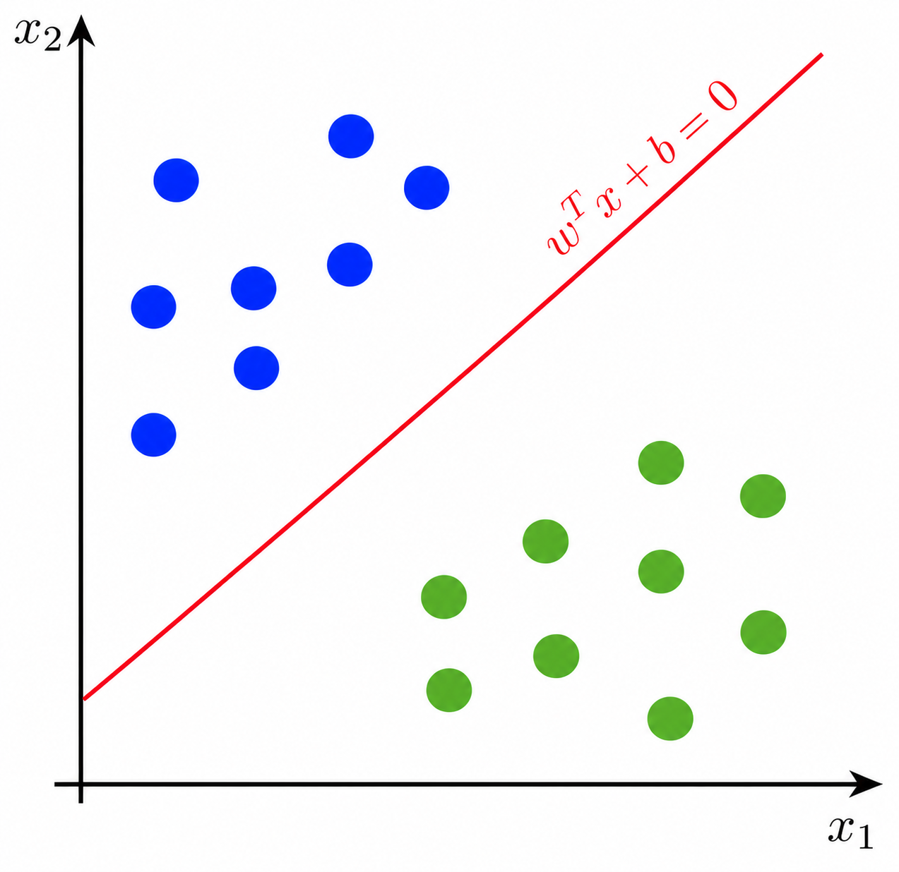
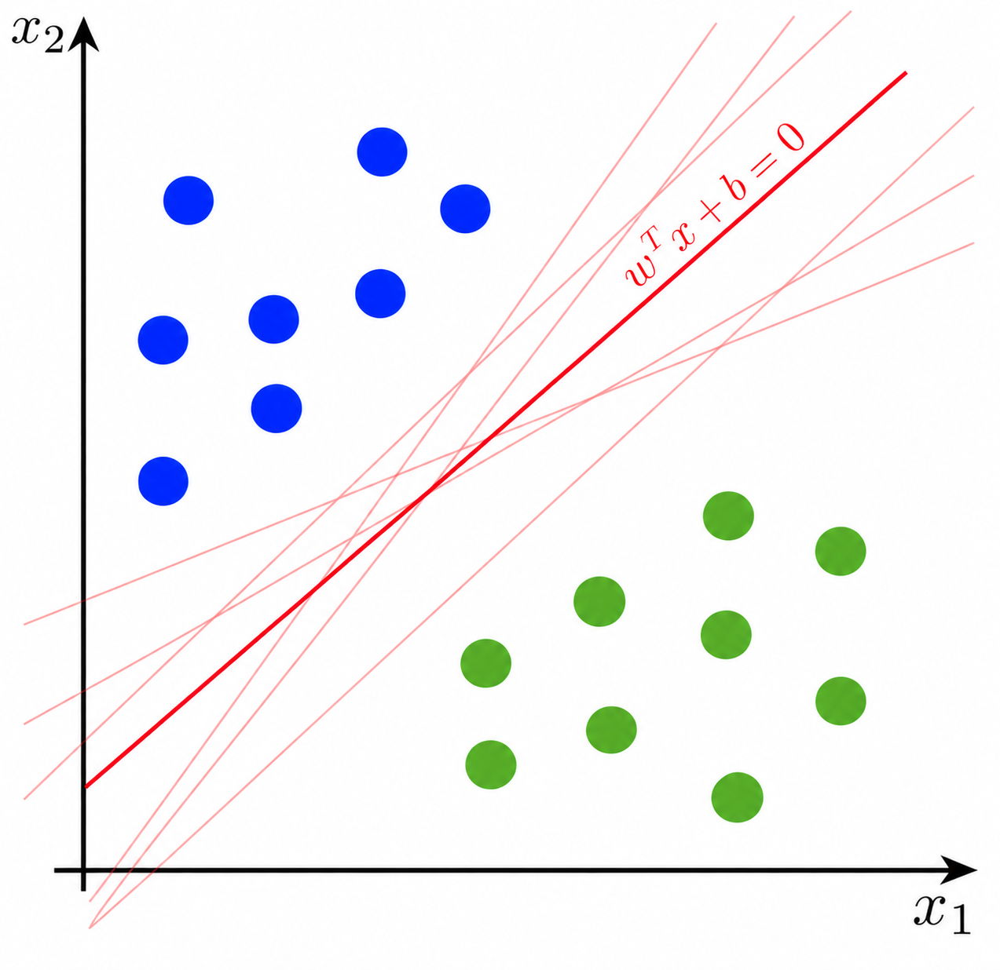
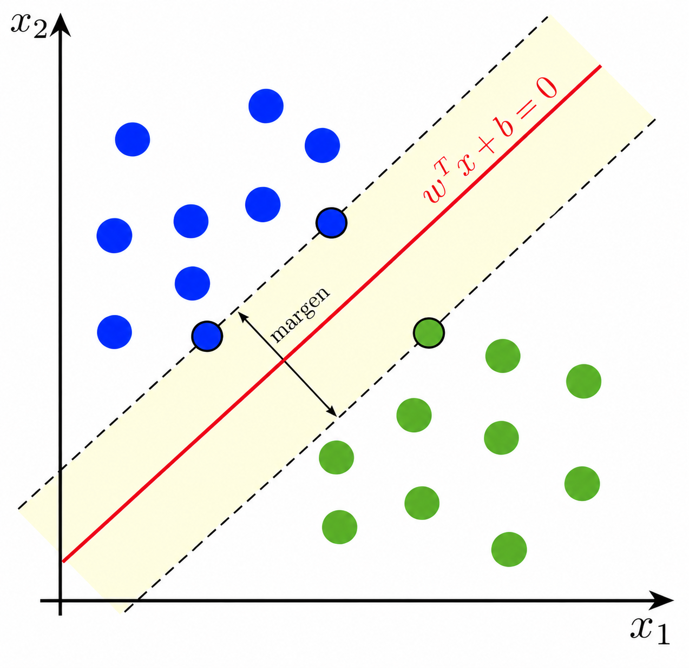
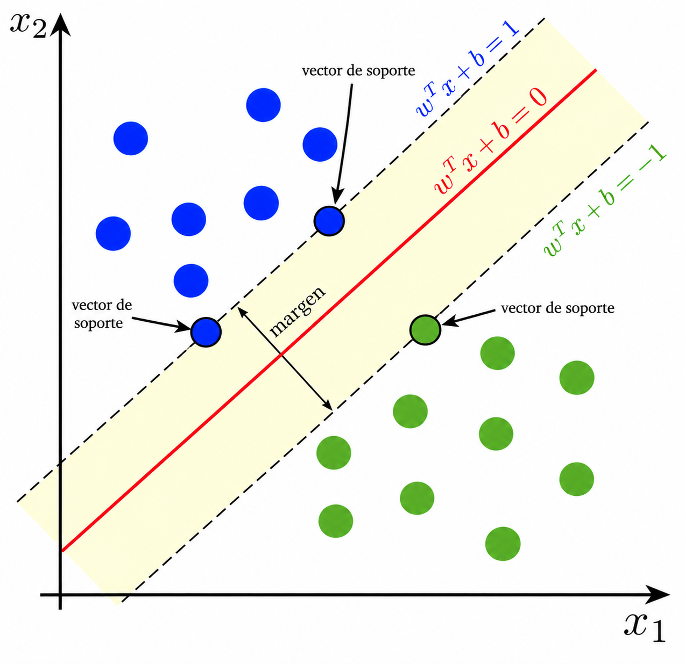
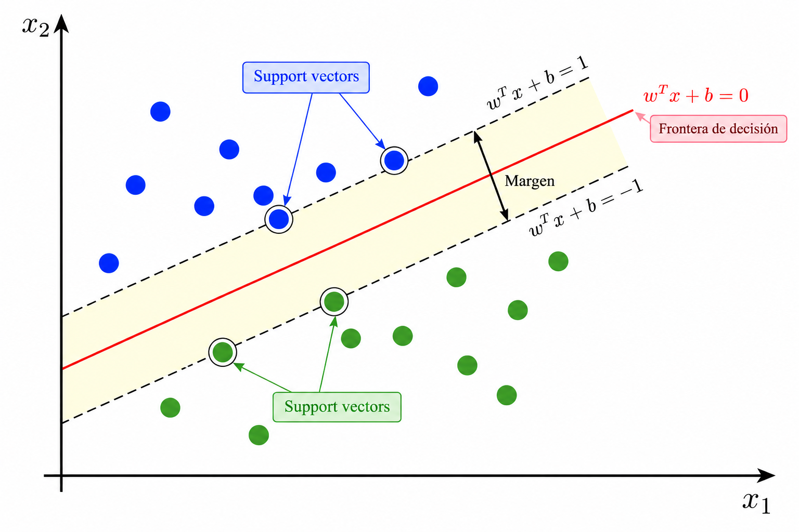
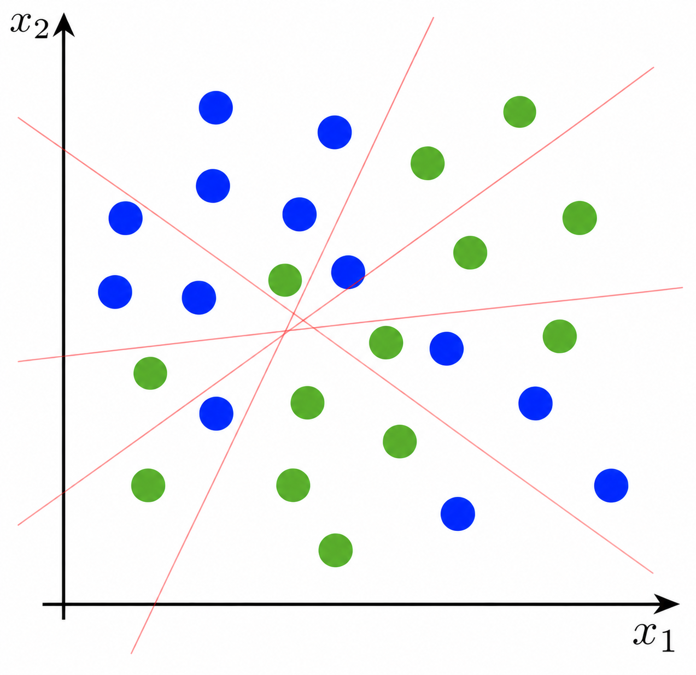
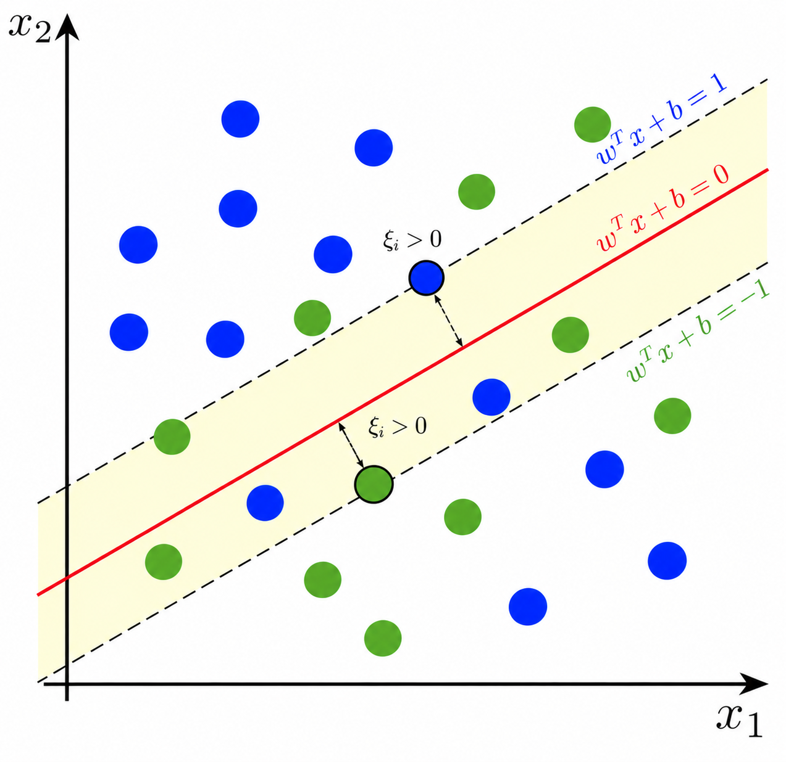
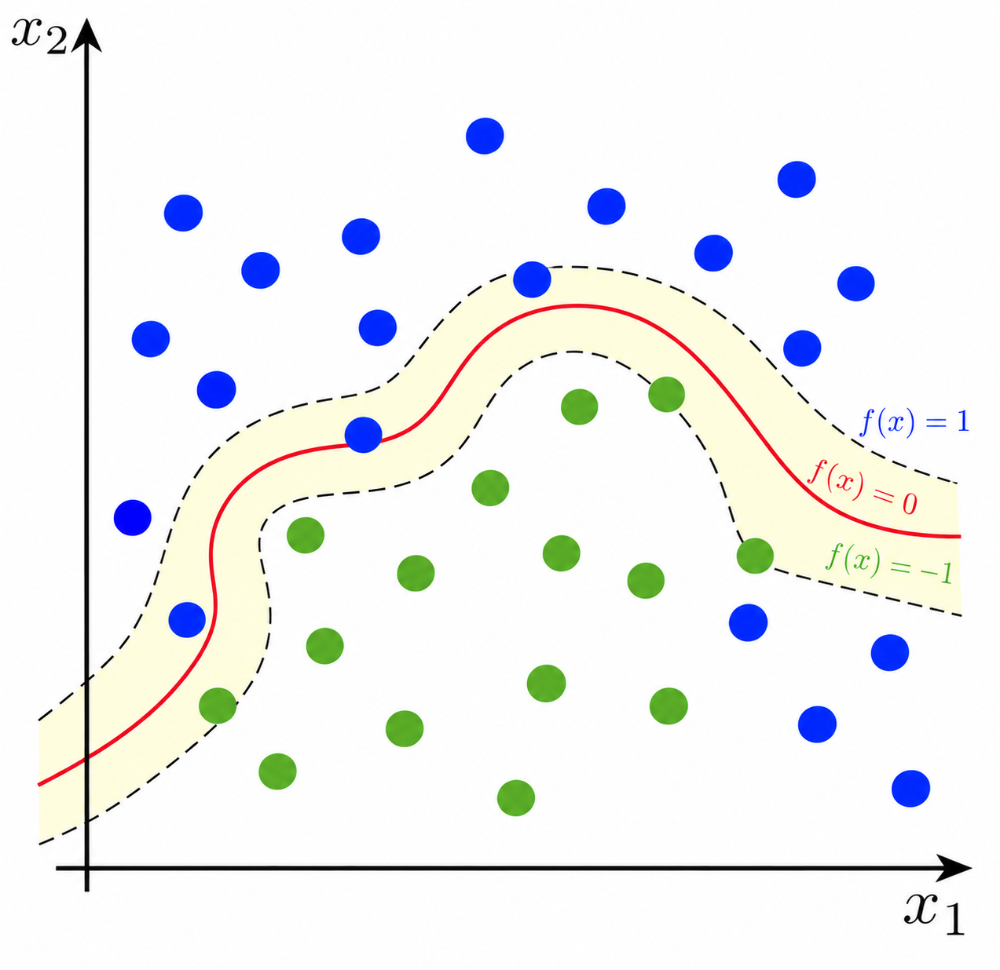

Aprendizaje supervisado
Support Vector Machine (SVM)
Introducción
Supongamos que tenemos un problema de clasificación con dos clases.
Nuestro objetivo es construir una frontera de decisión que permita separar las observaciones.
En dos dimensiones, una frontera lineal puede escribirse como
\[ w_1x_1+w_2x_2+b=0. \]
En general,
\[ \mathbf w^T\mathbf{x}+b=0, \qquad \mathbf w\in\mathbb R^p. \]

En Support Vector Machine (SVM) se busca construir una frontera que separe las clases con el mayor margen posible.
¿Qué frontera elegimos?
Si los datos son linealmente separables, pueden existir muchas fronteras capaces de clasificarlos correctamente.
Todas pueden separar las clases.
Entonces surge una pregunta:
¿cuál deberíamos elegir?

Margen máximo
SVM elige la frontera que se encuentre lo más lejos posible de las observaciones de ambas clases.
La distancia entre la frontera y las observaciones más cercanas se denomina margen.

La idea fundamental de SVM es encontrar la frontera de decisión que maximiza el margen.
Vectores de soporte
Las observaciones más cercanas a la frontera reciben el nombre de vectores de soporte.
Estas observaciones son especialmente importantes porque determinan la posición de la frontera de decisión.

Los puntos alejados de la frontera tienen poca o ninguna influencia sobre su posición.
Los vectores de soporte son los puntos críticos para construir el clasificador.
Formulación
Sea \(y_i\in\{-1,1\}\). La frontera de decisión está dada por
\[ \mathbf w^T\mathbf x+b=0. \]
Escalamos \(\mathbf w\) y \(b\) de forma que los puntos más cercanos se encuentren sobre los planos
\[ \mathbf w^T\mathbf x+b=1, \qquad \mathbf w^T\mathbf x+b=-1. \]
Así, para los puntos sobre el margen:
\[ y_i=1 \quad\Rightarrow\quad \mathbf w^T\mathbf x_i+b=1,\quad y_i=-1 \quad\Rightarrow\quad \mathbf w^T\mathbf x_i+b=-1. \]
Esto puede ser expresado por la ecuación \[y_i(\mathbf w^T\mathbf x_i+b)=1.\]
Formulación
Por lo tanto, para que todas las observaciones estén sobre el margen o fuera de él, exigimos
\[ y_i(\mathbf w^T\mathbf x_i+b)\geq1, \qquad i=1,\ldots,n. \]
Como la distancia entre dos planos paralelos \[ \mathbf w^T\mathbf x=c_1 \qquad\text{y}\qquad \mathbf w^T\mathbf x=c_2 \]
está dada por
\[ d=\frac{|c_1-c_2|}{\|\mathbf w\|}. \]
La distancia entre nuestros planos es:
\[ d= \frac{|(1-b)-(-1-b)|}{\|\mathbf w\|} = \frac{2}{\|\mathbf w\|}. \]
Formulación
Como el ancho del margen es
\[ \text{margen}=\frac{2}{\|\mathbf w\|}, \]
maximizarlo equivale a minimizar \(\|\mathbf w\|\):
\[ \max \frac{2}{\|\mathbf w\|} \quad\Longleftrightarrow\quad \min \|\mathbf w\|. \]

Por conveniencia, SVM resuelve
\[ \min_{\mathbf w,b}\frac12\|\mathbf w\|^2 \quad \text{s.t.} \quad y_i(\mathbf w^T\mathbf x_i+b)\geq1. \]
Hard margin
La formulación anterior supone que las clases pueden separarse perfectamente.
A este enfoque se le conoce como hard-margin SVM.
\[ \min_{\mathbf w,b}\frac12\|\mathbf w\|^2 \quad \text{s.t.} \quad y_i(\mathbf w^T\mathbf x_i+b)\geq1, \quad \forall i. \]
Cuando las clases se mezclan
Consideremos ahora datos como los siguientes:
No existe una frontera lineal que clasifique correctamente todas las observaciones.
En lugar de exigir una separación perfecta, podemos permitir algunas violaciones del margen.

Soft margin
En hard margin exigíamos
\[ y_i(\mathbf w^T\mathbf x_i+b)\geq1. \]
Para permitir violaciones, introducimos una variable de holgura \(\xi_i\geq0\):
\[ y_i(\mathbf w^T\mathbf x_i+b)\geq1-\xi_i. \]
Así, \(\xi_i\) mide cuánto permitimos que la observación \(i\) viole el margen.

Soft margin
El problema se convierte en
\[ \min_{\mathbf w,b,\boldsymbol\xi} \left\{ \frac12\|\mathbf w\|^2 + C\sum_{i=1}^{n}\xi_i \right\} \\ \text{s.t.} \quad y_i(\mathbf w^T\mathbf x_i+b)\geq1-\xi_i, \quad \xi_i\geq0, \quad \forall i. \]
\(C\) controla el compromiso entre maximizar el margen y penalizar sus violaciones.
\(C\) es un hiperparámetro y normalmente se selecciona mediante validación cruzada.
¿Y si la frontera no es lineal?
Algunos problemas no pueden separarse adecuadamente mediante una frontera lineal.
Una posibilidad sería transformar los predictores a un espacio de mayor dimensión donde las clases sean más fáciles de separar.

Kernel trick
Los SVM pueden utilizar una función llamada kernel para construir fronteras no lineales.
El kernel mide la similitud entre dos observaciones:
\[K(\mathbf x_i,\mathbf x_j).\]
El kernel trick permite trabajar implícitamente en un espacio de características diferente sin tener que construir explícitamente todas las nuevas variables.
Kernels comunes
Algunos kernels utilizados frecuentemente son:
| Kernel | Función | Hiperparámetros |
|---|---|---|
| Lineal | \(K(\mathbf x_i,\mathbf x_j)=\mathbf x_i^T\mathbf x_j\) | \(C\) |
| Polinomial | \(K(\mathbf x_i,\mathbf x_j)=(\gamma\mathbf x_i^T\mathbf x_j+r)^d\) | \(C\), \(\gamma\), \(r\), \(d\) |
| Radial Basis Function (RBF) | \(K(\mathbf x_i,\mathbf x_j)=\exp\left(-\gamma\|\mathbf x_i-\mathbf x_j\|^2\right)\) | \(C\), \(\gamma\) |
| Sigmoid | \(K(\mathbf x_i,\mathbf x_j)=\tanh(\gamma\mathbf x_i^T\mathbf x_j+r)\) | \(C\), \(\gamma\), \(r\) |
\(C\) es el parámetro de penalización del SVM. Los parámetros \(\gamma\), \(r\) y \(d\) dependen del kernel seleccionado.
Todos ellos son hiperparámetros del modelo y sus valores pueden seleccionarse mediante validación cruzada.
Escalamiento
Los SVM dependen de distancias y productos entre las variables predictoras.
Por esta razón, variables medidas en escalas muy diferentes pueden afectar considerablemente el modelo.
Por ejemplo,
\[X_1\in[0,1], \qquad X_2\in[0,100000].\]
Antes de ajustar un SVM debemos escalar las variables predictoras.
Evaluación
Una vez obtenidas las clases predichas, podemos evaluar el modelo utilizando las mismas métricas utilizadas para otros problemas de clasificación:
- Accuracy
- Precision
- Recall
- Matriz de confusión
- Curva ROC
La elección de la métrica depende del tipo de error que sea más importante evitar.
Consideraciones prácticas
Antes de utilizar SVM debemos recordar:
- las variables predictoras generalmente deben escalarse;
- el parámetro \(C\) controla la penalización de las violaciones;
- el kernel determina el tipo de frontera que puede construir el modelo;
- los hiperparámetros deben seleccionarse utilizando datos de validación;
- SVM puede ser computacionalmente costoso para datasets muy grandes.
¿Y para regresión?
SVM también puede utilizarse para problemas de regresión mediante
Support Vector Regression (SVR).
En lugar de buscar una frontera que separe clases, SVR busca una función que aproxime una variable continua, permitiendo cierto margen de error \(\varepsilon\).
Échale un vistazo al ejemplo de Support Vector Regression (SVR) de Scikit-learn.
Referencias
Preguntas

¿Qué sigue?
En el siguiente notebook implementaremos un Support Vector Machine, desde el escalamiento de los datos hasta la selección del kernel y sus hiperparámetros.
Modelado de Datos · UACJ